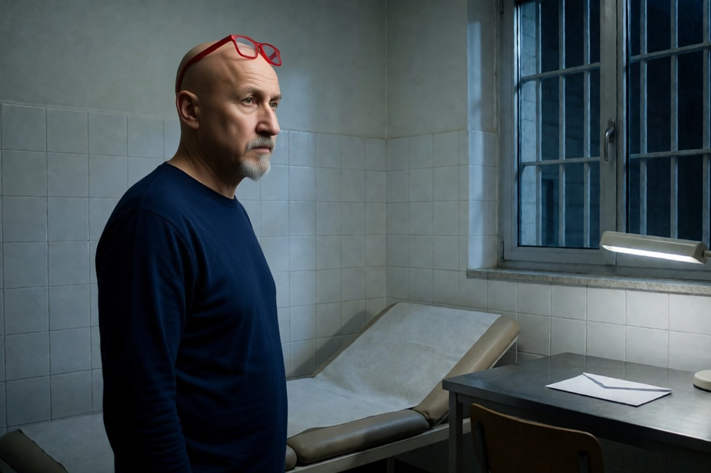

Politica italiana · 6 novembre 2026
Cpr, il parere del medico dell'Asl non blocca più il trattenimento

La nuova direttiva di Piantedosi cambia la regola scritta nel 2022: la visita resta, ma serve a dire di quali cure il migrante ha bisogno. Una legge del 2015 chiede ancora un controllo che nel testo non c'è più.
di Franco Zanghì
Chi deve essere espulso, prima di entrare in un Centro di permanenza per il rimpatrio, passa da una visita medica. Nel 2022 l'allora ministra dell'Interno Luciana Lamorgese aveva stabilito che quel medico dovesse dire se la persona era compatibile con la vita in una comunità chiusa: se scriveva di no, il trattenimento si fermava lì. Il ministro Matteo Piantedosi ha riscritto quella regola. La visita resta, ma adesso serve a indicare di quali cure la persona ha bisogno; la scheda va in busta chiusa al medico che lavora dentro il centro, e il parere negativo — l'ha detto il ministro stesso — non è più vincolante.
Perché il Viminale l'ha cambiata
Il ministro parla di valutazioni «influenzate solo da pregiudizi ideologici» che ostacolerebbero i rimpatri. Qualche numero gli dà una mano: secondo dati pubblicati dal Giornale, a Milano, da gennaio a metà settembre, su 125 stranieri da espellere che non sono entrati in un Cpr, 110 non ci sono entrati per motivi sanitari. Quasi 9 su 10.
Sullo sfondo c'è l'inchiesta di Ravenna: otto medici del reparto di Malattie infettive indagati per presunti certificati falsi, e un altro, Nicola Cocco, con un'accusa più grave. Per tutti vale la presunzione d'innocenza fino alla sentenza definitiva. Un mese fa la Cassazione ha annullato la sospensione di tre dottoresse: l'inchiesta prosegue, ma nulla è accertato.
Il controllo che la direttiva non nomina più
C'è però un punto che non torna. Il decreto legislativo 142 del 2015, all'articolo 7, vieta di trattenere i richiedenti asilo quando le loro condizioni di salute sono incompatibili con il trattenimento. Quella norma non è stata abrogata. E un'ordinanza della Cassazione del 2017 definisce quell'accertamento una condizione indispensabile perché il trattenimento sia valido, da compiere prima che un giudice lo convalidi. La direttiva precedente richiamava quella legge. La nuova no.
Da qui le domande. Chi accerta adesso che quella persona possa stare lì dentro? Il medico del centro? Ma quel medico è pagato dal gestore privato che ha vinto l'appalto, e l'appalto lo assegna la prefettura. E se un giudice deve convalidare un trattenimento, su quale atto si basa?
Le reazioni
La Federazione nazionale degli Ordini dei medici, con il presidente Filippo Anelli, aveva già sostenuto a settembre che i medici non sono ausiliari delle politiche di sicurezza e che dichiarare l'incompatibilità è un atto medico; sulla nuova direttiva Anelli ha aggiunto che chi ignora il parere deve poi risponderne. L'Associazione per gli studi giuridici sull'immigrazione ricorda che il Consiglio di Stato, l'anno scorso, ha annullato il capitolato di gestione dei centri perché non garantiva le tutele sanitarie. Il Partito democratico, con la deputata Rachele Scarpa, annuncia un'interrogazione parlamentare; Alleanza Verdi e Sinistra, con Marco Grimaldi, chiede il ritiro immediato della direttiva.
Il punto
Il ministro ha ragione a togliere il potere di veto a chi lo usava per ragioni politiche: un certificato medico deve dire come sta una persona, non fare la politica dell'immigrazione al posto del Parlamento. Ma ha sbagliato a togliere il controllo insieme al veto. Bastava lasciare una visita fatta da un medico pubblico, magari entro 24 ore dall'ingresso, con un parere che il giudice legge prima di convalidare. Una regola che regge solo finché nessuno fa ricorso è una regola che aspetta il primo giudice. E quando arriverà, a pagare il conto saranno di nuovo i rimpatri.
Fonti
- Ansa, «Piantedosi, parere medico non sarà vincolante per evitare il Cpr», 5 novembre 2026
- Il Fatto Quotidiano, «Migranti nei Cpr, il presidente dei medici sulla direttiva Piantedosi», 6 novembre 2026
- il Giornale, Fausto Biloslavo, «Clandestini, Viminale in campo. Stop ai medici anti-rimpatrio», 4 novembre 2026
- Alleanza Verdi e Sinistra, dichiarazione di Marco Grimaldi sulla direttiva
- Decreto legislativo 142 del 2015, articolo 7; Corte di cassazione, ordinanza 15106 del 2017
I dati di Milano (125 mancati ingressi, 110 per motivi sanitari, da gennaio al 14 settembre 2026) sono pubblicati dal solo Giornale, su dati in suo possesso. Il testo integrale della direttiva non è stato diffuso: le ricostruzioni si basano sulle dichiarazioni del ministro e sulle anticipazioni delle testate.